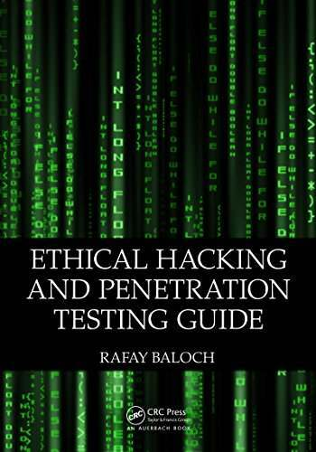
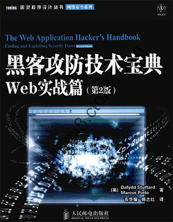
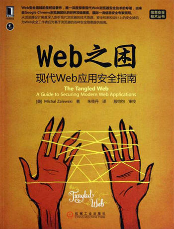

- 00 导读 解读OWASP Top10 2021.md
- 00 开篇词 从黑客的视角找漏洞，从安全的角度优雅coding.md
- 01 失效的访问控制：攻击者如何获取其他用户信息？.md
- 02 路径穿越：你的Web应用系统成了攻击者的资源管理器？.md
- 03 敏感数据泄露：攻击者如何获取用户账户？.md
- 04 权限不合理：攻击者进来就是root权限？.md
- 05 CSRF：为什么用户的操作他自己不承认？.md
- 06 加密失败：使用了加密算法也会被破解吗？.md
- 07 弱编码：程序之间的沟通语言安全吗？.md
- 08 数字证书：攻击者可以伪造证书吗？.md
- 09 密码算法问题：数学知识如何提高代码可靠性？.md
- 10 弱随机数生成器：攻击者如何预测随机数？.md
- 11 忘记加“盐”：加密结果强度不够吗？.md
- 12 注入（上）：SQL注入起手式.md
- 13 注入（下）：SQL注入技战法及相关安全实践.md
- 14 自动化注入神器（一）：sqlmap的设计思路解析.md
- 15 自动化注入神器（二）：sqlmap的设计架构解析.md
- 16 自动化注入神器（三）：sqlmap的核心实现拆解.md
- 17 自动化注入神器（四）：sqlmap的核心功能解析.md
- 19 失效的输入检测（上）：攻击者有哪些绕过方案？.md
- 20 失效的输入检测（下）：攻击者有哪些绕过方案？.md
- 21 XSS（上）：前端攻防的主战场.md
- 22 XSS（中）：跨站脚本攻击的危害性.md
- 23 XSS（下）：检测与防御方案解析.md
- 24 资源注入：攻击方式为什么会升级？.md
- 25 业务逻辑漏洞：好的开始是成功的一半.md
- 26 包含敏感信息的报错：将安全开发标准应用到项目中.md
- 27 用户账户安全：账户安全体系设计方案与实践.md
- 28 安全配置错误：安全问题不只是代码安全.md
- 29 Session与Cookie：账户体系的安全设计原理.md
- 30 HTTP Header安全标志：协议级别的安全支持.md
- 31 易受攻击和过时的组件：DevSecOps与依赖项安全检查.md
- 32 软件和数据完整性故障：SolarWinds事件的幕后⿊⼿.md
- 33 SSRF：穿越边界防护的利刃.md
- 34 Crawler VS Fuzzing：DAST与机器学习.md
- 35 自动化攻防：低代码驱动的渗透工具积累.md
- 36 智能攻防：构建个性化攻防平台.md
- 大咖助场 数字证书，困境与未来.md
- 春节策划（一） 视频课内容精选：Web渗透测试工具教学.md
- 春节策划（三） 一套测试题，看看对课程内容的掌握情况.md
- 春节策划（二） 给你推荐4本Web安全图书.md
- 结束语 无畏前行.md
春节策划（二） 给你推荐4本Web安全图书
你好，我是王昊天。
新年伊始，相信你对自己的工作和生活有了新的期许。不知道在这个假期里，在陪伴家人之余，你准备用什么方式充实自己呢？
其实，在现在互联网知识爆炸的时代，学习资料是非常丰富的，从音频到视频，都极大地丰富了我们的学习手段，但读书依然是我给自己充电的重要方式。
虽然阅读书籍的场景在逐渐减少，但我还是会推荐你要拿出时间去读书。为什么呢？
因为其实读书有一些特殊优势的。一方面，读书可以让我们获得内心的平静，这种inner-peace是非常难得的。另一方面，来自书籍的知识会更加系统。虽然书籍上知识的即时性不足，但是书籍之所以能够成为书籍，就是因为其中的知识是更加底层的基础理论，是有深远价值的。所以，读书能够帮助我们更加系统和深入地了解完整的知识体系。
所以，为了帮助你更好地学习漏洞挖掘，我精心挑选了4本网络安全书籍分享给你，希望你可以从中找到自己感兴趣的书进行阅读。虽然这些书里有些例子在今天看来有些陈旧了，但是其中基础的原理和底层的方法依然是常看常新，可以经常为我处理新的漏洞带来灵感和启迪，也希望能对你有所帮助。
渗透测试书籍：《Ethical Hacking and Penetration Testing Guide》

漏洞挖掘属于渗透测试的一部分。要想学好漏洞挖掘，我们首先要掌握渗透测试的基础知识。
与Web领域的渗透测试和漏洞挖掘相比，完整的渗透测试项目流程会更加复杂，涉及到目标发现、资产测绘、服务识别、漏洞分析、漏洞利用、远控免杀、横向移动等多方面知识。了解完整的渗透测试流程，有助于我们建立网络安全领域的全局观。
这本渗透测试书，非常方便理解，即使你是初学者也可以看懂。书中按照渗透测试的过程，通俗易懂地讲解了每个阶段需要用到的工具，以及不同阶段之间的联系，可以帮我们在漏洞挖掘领域打下坚实的基础。
所以，如果你是对渗透测试、网络攻防感兴趣的初级同学，这本优秀的入门级读物非常适合你。
Web应用攻防书籍：《黑客攻防技术宝典Web实战篇》和《白帽子讲Web安全》

《黑客攻防技术宝典》这本书，结合了Web安全领域专家的经验，系统地阐述了如何针对Web应用发起攻击与反攻击，同时深入剖析了攻击时所需要的步骤、技巧和工具。
这本书主要关注在Web安全实战领域，除了理论知识外，还包含了大量实战层面的攻击技巧和应对措施。此外，书中还有几百个漏洞实战，可以帮助你巩固所学内容。
所以，这本书非常适合掌握了一定Web渗透知识但缺乏大量实战经验的同学，是优秀的入门级提高读物。
《白帽子讲Web安全》这本书，会为你一一剖析各种Web漏洞的原理及攻防之道。它不仅仅有原理分析还有实践指导，是值得每一位Web安全从业者阅读的书。
这本书中详细列举了各种存在的攻防技术，及其技术的前世今生。其核心亮点是，深入浅出地讲解了Web安全领域的知识，并从技术底层和安全架构顶层的视角，带你深入构建完整的Web安全理念。这样一来，就可以帮助你全面学习Web安全了。
所以，这本书非常适合掌握了一定Web安全知识，同时想要理解底层逻辑以进一步提高Web安全认知的同学。这是一本优秀的提高级读物。
Web应用安全书籍：《Web之困：现代Web应用安全指南》

介绍完攻击角度的三本书之后，我再推荐一本安全防护角度的书籍《Web之困：现代Web应用安全指南》。在Web安全领域，这本书被称为圣经。
有业内人士这样评价这本书：从HTTP协议层逐级拆解Web安全风险，奇技淫巧、脑洞大开，其中外部资源调用403的钓鱼、打开新窗口重定向父页面的钓鱼、复杂协议的安全边界，在出版后的4年里依然风靡，实在佩服！
它会带着你深入剖析现代Web浏览器的技术原理、安全机制和设计上的安全缺陷，为你提供基于浏览器的安全隐患，例如浏览器缓存、浏览器内存的密码、浏览器历史记录等的保护措施。
好了，上面这4本书，就是我为你精选的Web安全的阅读书单了。
每一个项目都有终点，但在自我精进的道路上，我们仍需步履不停。今天我推荐的这些书目，你可以利用假期时间潜心阅读，掌握它们的核心内容，理解其中的思维方法。希望在新的一年里，这些知识成果不仅能帮助带你实现技术上的飞跃，更能拓展你的知识边界，带你实现自我成长。
好了，今天的分享就到这里，如果你有其它好书推荐，也欢迎在评论区留言，我们下节课再见。
© 2019 - 2023 Liangliang Lee. Powered by gin and hexo-theme-book.